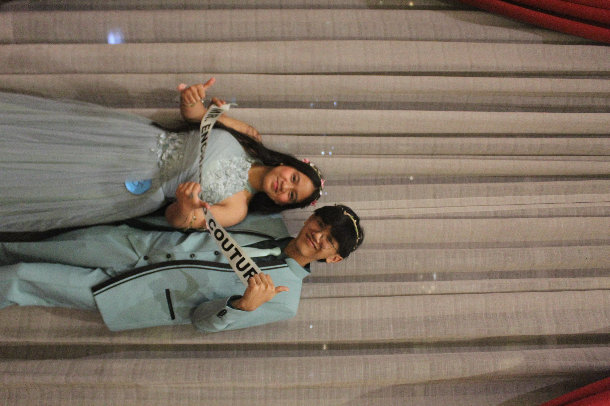
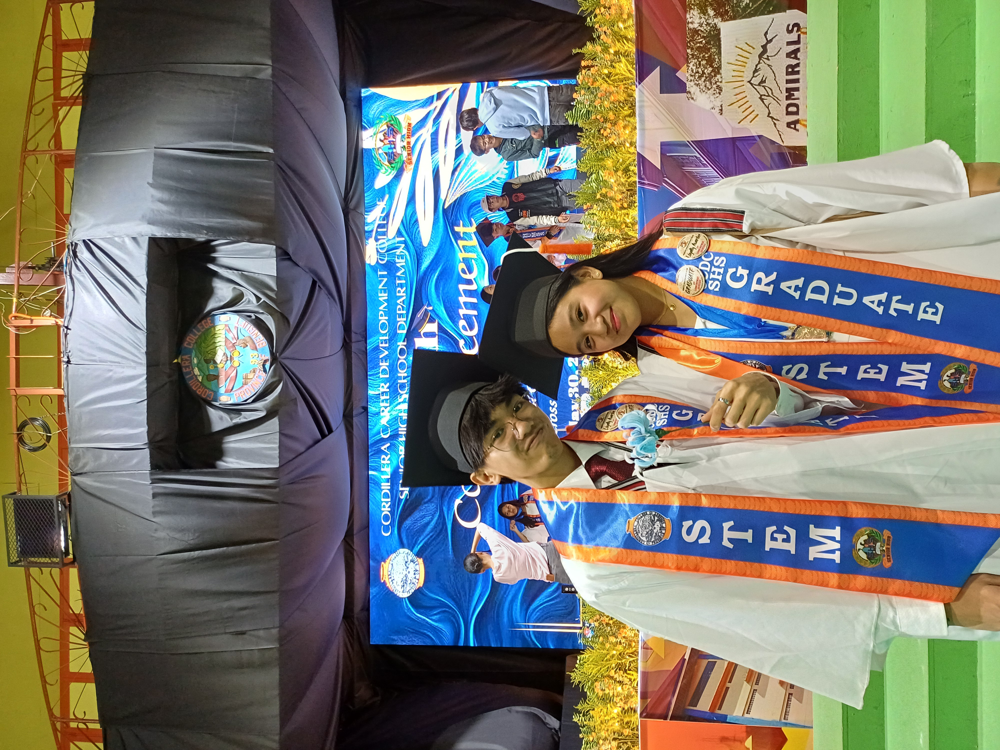
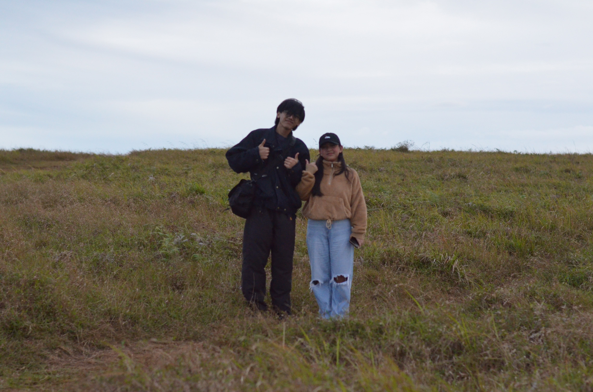

To my Dearest Kyra,
First of all, Happiest Birthday to my dearest Kyra! I’m writing this letter kasi gusto ko replayan yung letter mo hehe. Wag mo sanang tawanan ‘tong letter ko kasi first time ko pa gumawa hehe. Anyways, 19 kana, baby. One more year ‘till in your twenties na.
Kidding aside, I just want to say that you are my greatest risk. Because loving you means risking my heart entirely. It’s just funny that you made me follow the advice that I wrote in our film. To risk or to lose the chance. Alam ko na palagi ko tong kwine-kwento ‘to sayo pero, you made me stare at our graduation ball picture for a long time. It was just a couple minutes, but in that couple minutes, I was already thinking of us. And in that short amount of time, I found myself going back in time, not just to that night, but before that. To our practice.

our graduation ball
When I was afraid to hold your waist because I didn’t want you to feel uncomfortable. You guided my hand towards your waist and that made me feel shy. Yes, I know, cringe nyaknyak. And also, there was this moment – in our practice – when I needed to touch your face in our dance. For the same reason, I didn’t want to touch your face because I’m a gentleman (kidding nahihiya lang talaga ko). But then, you just guided my hand onto your face. I wasn’t even sure what I felt back then, but I do know that something was lit inside me. You even made me some accessories para ‘di lang ikaw yung “oa”. It may be just an accessory but it was something special for me. You made my suit stand out from the rest, and even attracted Ma’am Amor. Yon tuloy, may award ako nyaknyaknyak. And now, we’re in the middle of the dance floor, trembling if we’ll make a mistake. And yet, we danced. I led you, even though I didn’t know the entire dance. And in that short amount of time, that’s when I realized that I like you.
And that I’m in love with you.
I took my chance and asked you for a picture after our graduation.

the day we graduated
It was a memory of us that's been living rent-free in my head. A memory that made me love you regardless of our situation. A memory I kept for six months for myself. Until I finally said it, up on that mountain where it's just the two of us, and that suffocating air whether I should say it or not.

Mt. Yangbew, our spot
When we were sitting in our spot, you told me “di naman kasi ako naghahanap ng kachat eh”. I didn't take that seriously because you were chuckling when you said that, and also because I knew that it meant something. That’s when I told you the reason why I invited you to go to Mt. Yangbew with me. To tell you what I really feel about you — that I love you, matagal na.
The words that I couldn't say earlier finally blurted out. I also apologized because it took too long for me to confess my feelings. But you said that it was okay, and that I took my time. That's when I realized that the risk that I took was worth it. You also interviewed me, it was a fun way to break the seriousness of that situation. You also asked what I liked about you, when, how, and why. We goofed around for some time and when that ended, you told me something I wasn’t ready to hear. That you also liked me. I wasn’t expecting a reply to what I said, that's why I was caught off guard. It was just a sentence that came out of your mouth, but it took me a couple minutes to fully comprehend what you just said. It's a reply that even my ancestors would be so happy to receive.
And in that moment, when your cold hand was wrapped around my hand, and your head was resting on my shoulders. It's as if our body wasn’t done talking. I knew that I needed to keep you, and to make you feel the warmth of my body, until the very end of infinity. Because, you lit that spark that was once blown away from my own mistakes.
And now, almost six months later, I still find myself noticing little things about you. The way you fidget your thumbs with mine. The way you hold my ears when we're hanging out. You said that it was a habit of your father that made you calm when you were a kid. The way your arms always slither towards my arms when we’re together. You also always play with my hair. I also love how you always agree when I’m asking you to remove my white hairs. It always makes me sleepy when you're doing it. It may be small things but all these things make me feel one thing.
The warmth of a home.
A home full of laughter, comfort and peace.
What I’m just trying to say is that I love you. I love how you are so appreciative — even the smallest things. I love that you were always there when someone needed you the most. I love how you are so easy to trust. I love your creativity. I love how you manage to still show empathy and the effort to understand someone, even when they wronged you. You’re so…patient. And lastly, I love everything that you hate about yourself. That's why I love you. I really do.
You made me love you with your eyes, and now you made me love you even more with your soul.
Once again, Happy Birthday to you, my treasurer, my dance partner, and my girlfriend, Kyra.
Thank you for existing, and choosing me too.
— Totski.
My late gift for you,
and happy 6th monthsarry, Ya.